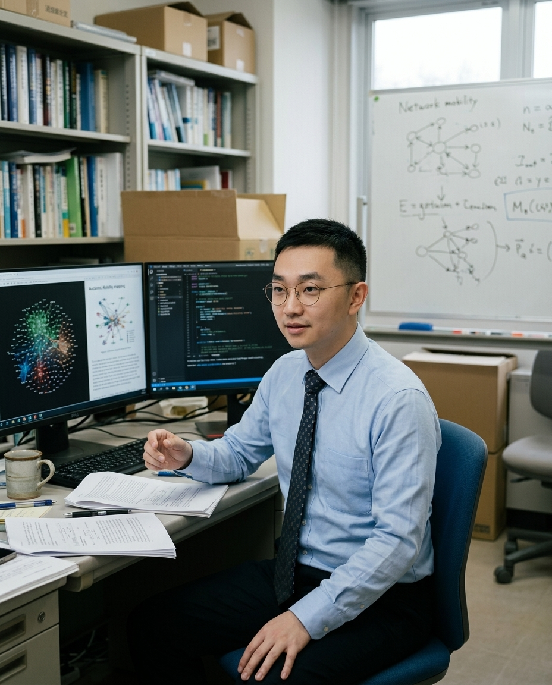

研究者（Science of Science）および計算社会科学の道に進まれたきっかけは何ですか？
私の背景には、マルチメディアデザイン（学士）からデジタルコンテンツ（修士）、マスコミュニケーション（修士）、そして現在の東北大学における計算社会科学・文学研究科（博士）へと至る、一貫した学際的探求があります。異分野を渡り歩く中で痛感したのは、「人間の行動や社会制度のダイナミクスを直感だけで語るのではなく、厳密な大規模データと計算モデルを通じて真のメカニズムを暴く必要がある」ということでした。
現在は科学の科学（Science of Science）および計算社会学を軸に、約26万人の研究者キャリアと日本の科研費（KAKENHI）データを統合した巨大な縦断データベース（Panel Data）を独自に構築し、データサイエンスの力で社会科学の古典的難題にアプローチしています。
『Scientific Reports』に採択された日本のアカデミアにおけるジェンダー不平等の研究について教えてください。
この研究（Pei et al., 2026）は、74,344件のresearchmapプロファイルを分析し、日本のアカデミアにおける昇進タイムラインのジェンダー差を生存分析（Event-history analysis）を用いて実証的に解明したものです。博士号取得から准教授、そして教授へと至る各トランジションにおいて、どの段階でジェンダー格差が顕在化するのかを右側打切データ（Right-censored careers）を考慮しながら精緻に明らかにしました。
代表的な査読付き論文 (Selected Publications)
- Pei, R., et al. (2026). Gender inequality in academic promotion trajectories in Japan. Scientific Reports.
- Pei, R., Lyu, Z., & Wang, G. (2026). Transformer-driven automated analysis of social media narrative structure. PLOS ONE.
- Pei, R. (2025). Analysis of research trends in the field of museology: Node2Vec & network modelling. Education Reform and Development.
単なる現象の描写にとどまらず、学閥・学内昇進（Academic Inbreeding）や組織間流動性、さらには科研費（KAKENHI）プロジェクトでの役割（非PIから主任研究者PIへの移行プロセス）がどのようにキャリアに影響するかを多角的に分析しています。
約26万人の研究者データベースや「JPResearcher」プラットフォームの構築について、どのような技術的アプローチをとっていますか？
私の研究の基盤となっているのは、researchmapのキャリア履歴とKAKENの競争的資金データを高度にリンクさせた、約26万人の大規模リンケージデータベースです。PythonやSQLを駆使してデータクリーニング、エンティティ解決、研究者・年（Researcher-year）および研究者・プロジェクト・年パネルの構築を行っています。
さらに、東北大学での博士研究の一環としてウェブベースの分析プラットフォーム「JPResearcher」を開発し、日本の学術昇進や資金配分の構造を可視化しました。分析用の派生データと再現可能なコードパイプラインは、Harvard Dataverse（DOI: 10.7910/DVN/ZJXZEC）にてオープンサイエンスとして一般公開しています。

JSPS KAKENHI や国立科学技術国家財団（NSTC）などの大型プロジェクトにも深く参画されていますね。
はい。これまでにJSPS科研費の挑戦的研究（公募研究・分担：社会秩序の問題をビッグデータで解明する計算社会学の構築）や、台湾国家科学技術国家財団（NSTC）の国際学術交流・人文社会高度研究プロジェクトなどに多数参画してきました。また、東北大学アドバンスト大学院（AGS）の「LEAP Program」採用者であり、前年度までは「AGS RISE Program」の博士研究員フェローとして「ソーシャルメディア上の世論拡散メカニズムと社会的影響に関する研究」の責任者を務めました。
主要な競争的資金・博士フェローシップ (Research Fellowships & Grants)
- Tohoku University AGS LEAP Program Doctoral Fellow (2026–Present).
- AGS RISE Program Lead Doctoral Fellow (2025–2026, JPMJFS22102).
- JST SPRING Doctoral Research Fellow (2024–2025, JPMJSP2114).
- JSPS KAKENHI Challenging Research (Exploratory) — Research Participant (2024–2026, JP24K21436).
今後のポスドク研究アジェンダと、学術界への貢献に向けたビジョンを聞かせてください。
私のポスドク研究アジェンダは明確です。第一に、STEM分野における女性研究者のキャリアを、静的な階層分布から動的な縦断プロセスとして捉え直し、昇進や流動性のどの段階でジェンダー差が生じるのかをさらに解明すること。第二に、科学の科学と研究ガバナンスを結合させ、大規模チームへの参加や科研費の構造が科学的権威へのアクセスにどう影響するかを明らかにすること。第三に、パブリックディスカッションや信頼・バイアスを対象としたAIと社会の倫理的・計算的研究を推進することです。
データは単なる数字の集積ではありません。それは社会の不平等を映し出し、より公正な制度設計へと導くための最も強力な対話の言語なのです。
裴 榮康（ハイ エイコウ / Rongkang PEI）
東北大学大学院文学研究科計算社会科学・科学の科学（Science of Science）博士課程後期。マルチメディアデザイン学士、デジタルコンテンツ修士、マスコミュニケーション修士を経て現職。約26万人の研究者キャリアとKAKENHIを統合した大規模縦断データベースの構築、イベントヒストリー分析やシーケンス分析を用いた日本のアカデミアにおける昇進・ジェンダー不平等の実証研究で国際的成果を上げる。Scientific Reports や PLOS ONE などに多数の査読付き論文を発表。東北大学 AGS LEAP Fellow、元 AGS RISE Lead Fellow、JST SPRING研究員。